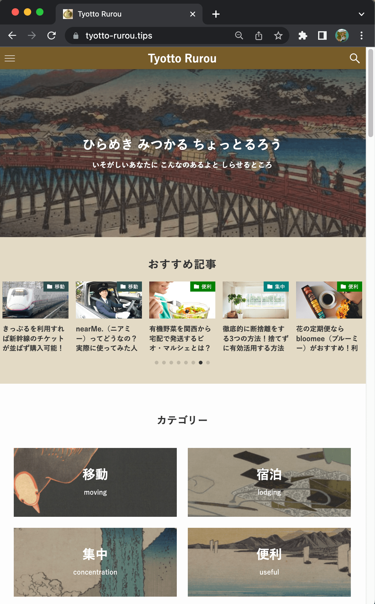
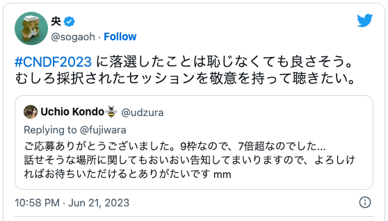
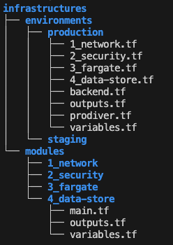
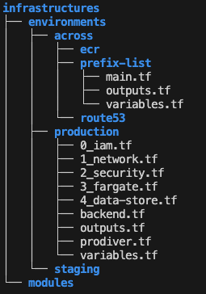
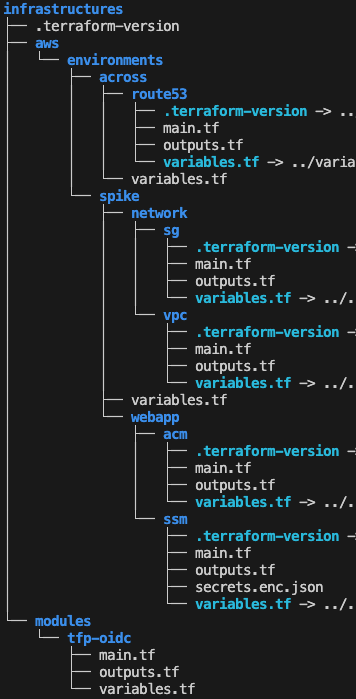

2023/07/07 @sogaoh
共有会
Hisashi SOGA [ SRE team ]
|  |
自社メディア "ちょっと るろう" URL : https://tyotto-rurou.tips/ 発想の転換を促したいときなどに 覗いてみていただけると 珍しい/お役立ちなITサービスが 見つかるかもしれないサイトです 毎月10記事くらいずつ発行しており、 新しいプロモーションを眺めることで 時流や売り出しの傾向を感じ取ったり しています SNS公式アカウントあり: |
|  |
|  |
2021 - 2022年前半 [関連資料] ■ LaravelプロダクトFargate化への道 (2021.03 PHPerKaigi 2021 LT) ■ PHPプロダクトのDeployをラクにするCLIツールたち (2021.10 PHP Conference 2021 LT) [ポイント] ・modulesに中区分単位でリソースを定義 ・環境によって変わる箇所を変数化 ・environments/*/${module}.tf で独自moduleを利用するように source 指定 |
|  |
2022年後半 〜 Terraform AWS modules を使うのを第一に考える [ポイント] ・OIDCを優先的に利用するようになったのもこの頃 ・terraform_remote_state を利用してない ・しかし security group と prefix list の棲み分けはしていた（変更影響の局所化チョットできていた） ・まだ、例えば、productionディレクトリでの terraform apply が、かなりドキドキ |
|  |
2023年 〜 ・公式/3rdParty ＋ 小規模な独自 module も利用する ・terraform_remote_state を利用して管理単位を適度に [ポイント] ・.terraform-version (など) の統一（symlink） ・outputs.tf をちゃんと書く：何を外から参照するのか ・秘匿情報も難読化してリポジトリで管理する ・変更影響が局所化されるので、terrafom や aws provider のアップグレードに対応しやすい ・変更箇所に応じた CI (自動 terraform plan) を実現可能 |
| 機能 | 柔軟性 | 費用 | 総合 | |
| Jenkins | ◎ | ◎ | ◎ | ◎ |
| GitHub Actions |
◎ | ○ | ◎ | ○ |
| AWS CodeBuild |
△ | ○ | ○ | ○ |
| CircleCI | ○ | ○ | △ | □ |
| Bitbucket Pipelines |
△ | △ | ○ | △ |
コンテナ全盛期の今に、忘れかけていた基本を
思い出させてくれている
まだ、過渡期なのだ。
知れることが多いのはありがたく、
きっと将来に活きる
大きなプロダクトを作っていくには
小さいことをコツコツと積み重ねて
いくのが大切なんだなあ ひさを
(免責事項)
この資料は 2023年7月7日 時点で、自身の見解を
なるべく正確に伝えたいという思いで書きましたが、
内容の恒久性と正確性に関して責任を負うものでは
ありません。ご了承ください。
お気づきの点あれば
@sogaoh まで